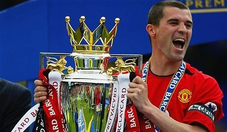

Sigurjón HalldórssonFársjúkur Manchester United stuðningsmaður |
 |
HlutverkAlex Ferguson tíminnAðal hlutverkið var að minna Nallara að þeir hefðu aldrei unnið þrennuna, Chelsea lúða að "You'll never win 3 in a row" og að vorkenna Poolurnum David Moyes tíminnVona að Alex Ferguson vissi hvað hann var að gera þegar hann sá til þess að það yrði gerður 6 ára samningur við David Moyes eftir að hann hætti sökum heilsu. Hann vissi ekkert. NútíminnHafa áhyggjur af því að klúbburinn verði í eigu Ameríkana um ókomna tíð og verður eins konar erfðagripur Glazer fjölskyldunnar, sem virðist verða heimskari með hverri kynslóð |